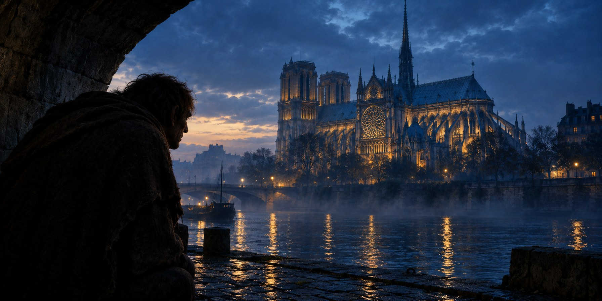
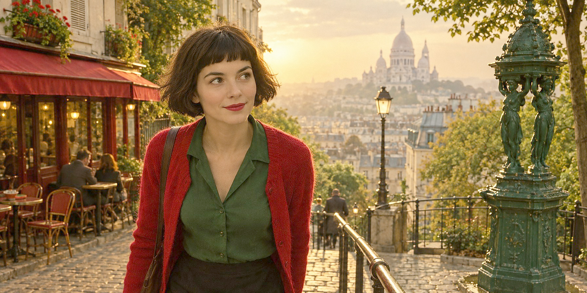
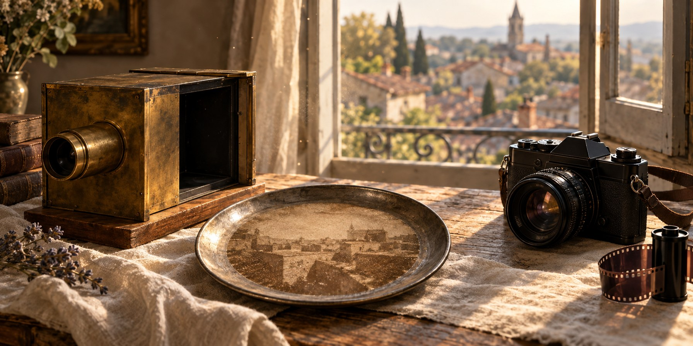
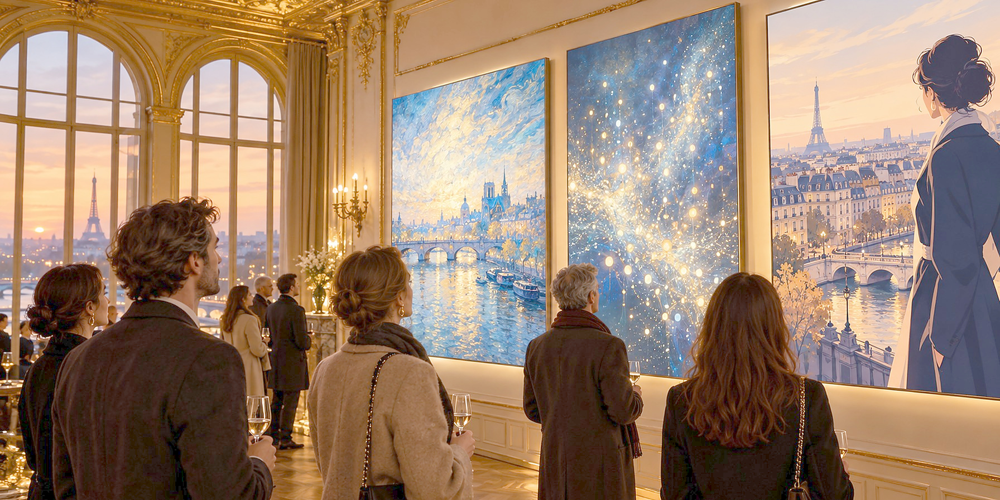
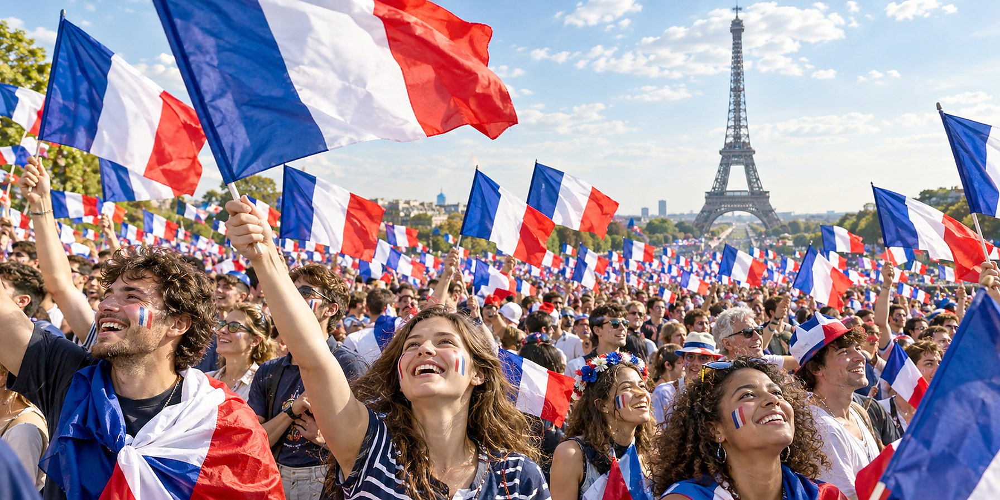
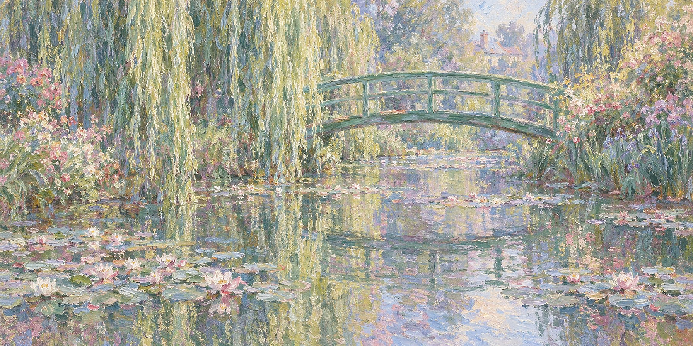
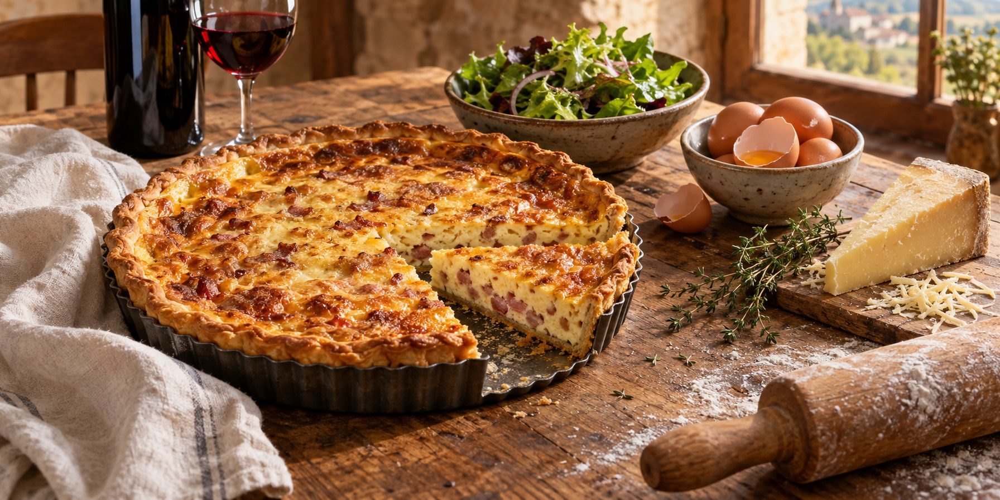
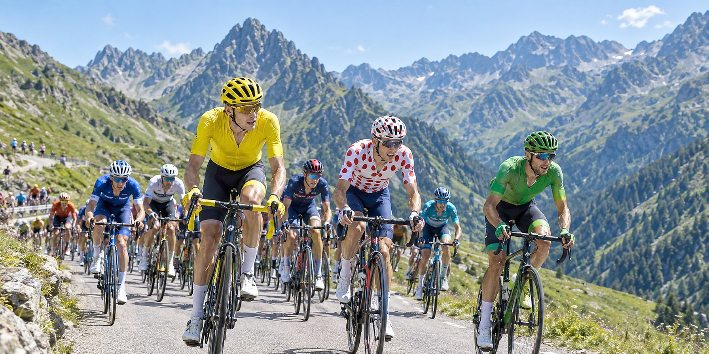

Weekly WhatsApp drip for the French Atelier base. Eight messages, six pure content, two with the 20 percent October and November promos. Every message ties back to French Atelier's live online French school and the teacher on the other end of the class.








| WA | File | Dimensions | Brief brief-line subject |
|---|---|---|---|
| WA-1 | wa-1-notredame-hugo.jpg | 1792×897 | Notre-Dame at dusk with the Hunchback silhouette on the Seine embankment |
| WA-2 | wa-2-amelie-montmartre.jpg | 1792×897 | A girl with Amélie-inspired hair on the Montmartre stairs, Sacré-Cœur behind |
| WA-3 | wa-3-photography-200years.jpg | 1792×897 | Early photograph on pewter plate with vintage camera obscura and a modern SLR by a French rooftop window |
| WA-4 | wa-4-novembre-numerique.jpg | 1792×897 | Novembre Numérique salon evening in a classical French institute, three glowing digital-art canvases, Eiffel Tower at sunset |
| WA-5 | wa-5-french-flag-crowd.jpg | 1792×897 | Sea of people waving the French flag on the Champs-Élysées |
| WA-6 | wa-6-monet-painting.jpg | 1792×897 | Water Lilies and the green Japanese bridge at Giverny, in Monet's impressionist style |
| WA-7 | wa-7-quiche-lorraine.jpg | 1792×897 | Golden Quiche Lorraine on a rustic table with eggs, cream and a French countryside window |
| WA-8 | wa-8-tour-de-france.jpg | 1792×897 | Cyclists in the Pyrenees with the yellow, polka-dot and green jerseys visible at the front of the peloton |
{kind=link}
{kind=link}
{kind=link}
{kind=link}
{kind=link}
{kind=link}
{kind=link}
{kind=link}